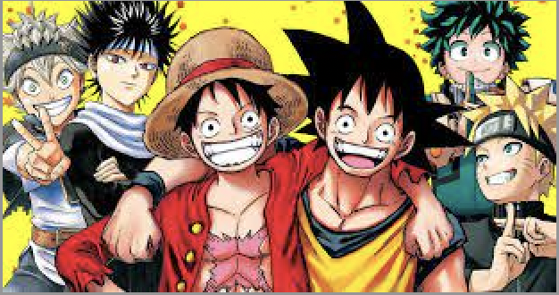

As a RELIGOUS gamer, I am big fan of videogames, primarily from Nintendo.
Growing up I fell in love with Mario and Luigi, along with Kirby. Despite
Sonic being apart of SEGA, the blue hedgehog found a place in my heart along with the others.

Video games aren't the only type of entertainment that have
'intoxicaed' my brain with pure seretonin. Thanks to my brother, I was also able to get into Anime as well. So far, i've fully completed (and watched several times) Naruto Shippuden,
and I am currently watching My Hero Academia, Blue Lock, One Peice and Demon Slayer. Although, I do
have to berate my brother for one thing, beacue starting me off with I high rated anime like
Naruto was a bad idea,considering now my expectations for anime series are WAY to high.
You probably wouldn't have guessed this next bit, but i'm known as a great singer
between my family and my school. I've done many preformances at my school and
at many theatres, and safe to say im very proud of myself.